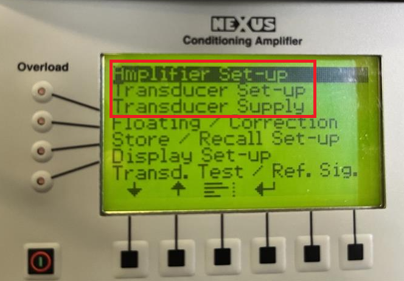
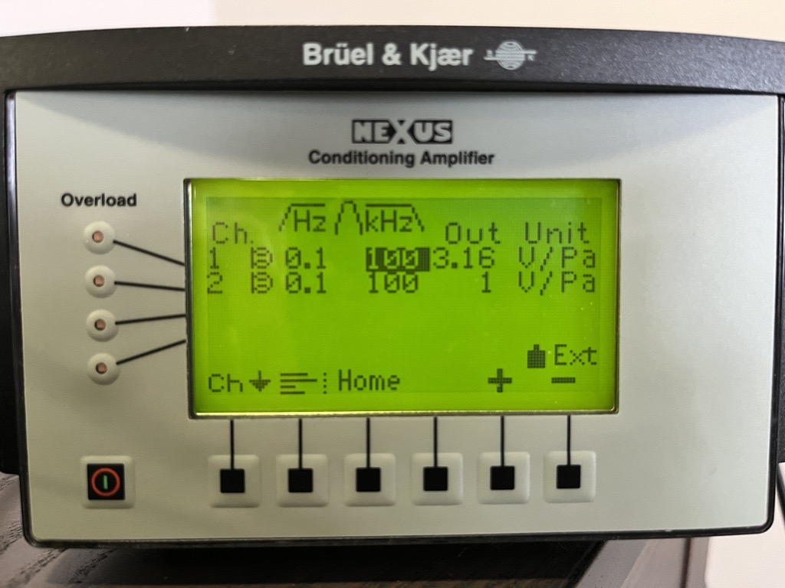
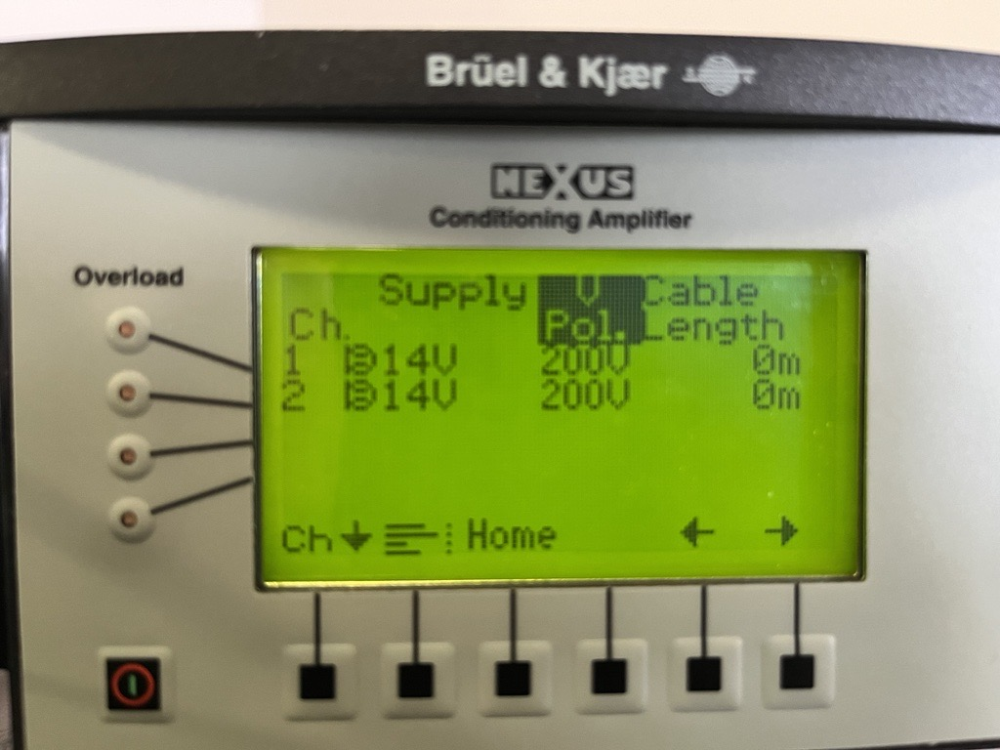

Speaker calibration
- Instructions for calibrating rig speaker
- Purpose: Speaker has nonlinear response across frequencies, must ensure voltage delivered to speaker corresponds to desired dB output for various signals
- Output: gain values corresponding to voltage needed to drive speaker to obtain desired dB SPL
- Oscilloscope: Tektronix TDS2002B
- microphone with attached pre-amp (1/8 inch 4138-A-015; Brüel and Kjær / HBK)
- reference sound calibrator (Type 4231, Brüel and Kjær / HBK)
- amp (Nexus 2690-0S Brüel and Kjær / HBK)
- Brüel and Kjær / HBK tool contact: Isaac.farzaneh@hbkworld.com | 800-332-2040
Prerequisite: calibration stimuli
1. Amp setup
- Setup Menu: 
- Amplifier Set-up: Output sensitivity from Nexus amp
- Can set the output to 3.16 V/Pa as shown below. Make sure the band-pass filter is configured correctly so the system can read the 1000 Hz tone from the 4231 calibrator. Setting the filter to 0.1–100 kHz allows the full usable frequency range to pass through.
- 1 Pa corresponds to 94 dB
- 
- Transducer Set-up: Microphone sensitivity
- The nominal sensitivity of the 4939-A-011 is 4.419 mV/Pa, but if you have a calibration card for your specific microphone (inside microphone box), you should enter the actual calibrated sensitivity shown on the card.

- Transducer Supply: Microphone sensitivity
- Set the polarization voltage to 200 V. The 4939-A-011 is an externally polarized microphone, so it requires a 200 V polarization supply.
- 
3. Record 94 dB reference voltage
- 1 Pa corresponds to 94 dB. Type 4231 reference speaker outputs 1 kHz at 94 dB. Thus, if output sensitivity set to 3.16 V / Pa, should see 3.16 V RMS on oscilloscope with 'Autoset'
4. Record stimuli voltage
- Set gain to 1800 and record voltage to oscilloscope for stimuli that are to be calibrated
- Ensure oscilloscope channel set to 1X (eg. Ch 1 Menu): Probe 1X Voltage
- Can use scripts pure tones and all other stimuli (BPN etc)
Reference
Volt2dB
dB = 20 · log₁₀(V_out/V_ref) + dB_ref
dBwant2voltage
dB = 20 · log₁₀(V_want/V_ref) + dB_ref
[ ] = (dB - dB_ref)/20
10^[(dB - dB_ref)/20]
V_want/V_ref = 10^((dB - dB_ref)/20)
V_want = 10^((dB - dB_ref)/20) · V_ref
Vwant2gain
V_Gref/G_ref = V_want/G_set
G_set = G_ref · (V_want/V_Gref)